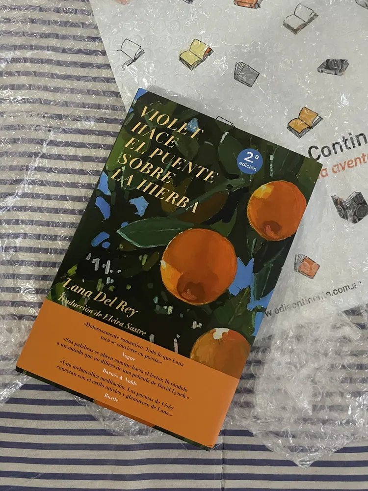

Nombre real: Elizabeth Woolridge Grant
Nacimiento: 21 de junio de 1985, Nueva York, Estados Unidos
Ocupación: Cantautora, poeta, productora, modelo
Elizabeth Woolridge Grant, conocida mundialmente como Lana Del Rey, nació en el seno de una familia acomodada en Lake Placid, Nueva York. Desde pequeña se sintió atraída por la música y la literatura, lo que la llevó a escribir poesía y canciones desde temprana edad. A los 15 años fue enviada a un internado para lidiar con problemas de alcoholismo, una experiencia que más tarde influiría profundamente en sus letras.
Tras terminar sus estudios en filosofía en la Universidad de Fordham, se trasladó a Brooklyn, donde comenzó a experimentar con la música bajo varios nombres artísticos, hasta dar con "Lana Del Rey", una combinación que, según ella, evoca el glamour del cine clásico y la costa americana.
En 2011, Lana subió un video casero de “Video Games” a YouTube. Su atmósfera nostálgica, voz seductora y estética vintage captaron la atención del mundo. En 2012 lanzó Born to Die, un álbum que dividió a la crítica pero conquistó al público. El disco se convirtió en un fenómeno mundial, gracias a canciones como “Blue Jeans”, “Summertime Sadness” y “National Anthem”.
Desde entonces, ha lanzado una impresionante serie de álbumes, entre ellos:
.jpg)
Lana Del Rey ha definido un estilo propio que mezcla el pop barroco, dream pop, rock alternativo y trip hop, con letras cargadas de nostalgia, romance trágico, decadencia americana y referencias a la cultura pop de los años 50 y 60.
Su voz contralto, grave y suave, se combina con una estética cuidadosamente elaborada: desde videos retro en Super 8 hasta referencias a Marilyn Monroe, Elvis Presley, y la mitología americana.
Además de la música, Lana ha incursionado en la poesía. En 2020 publicó "Violet Bent Backwards Over the Grass", un libro de poemas acompañado por una versión hablada con música de fondo, que demuestra su talento literario y sensibilidad emocional.
También ha trabajado como modelo, ha colaborado en campañas de moda y ha dirigido varios de sus videoclips.
Lana Del Rey ha sido nominada a múltiples premios, incluyendo 7 Grammy Awards, un Globo de Oro, y ha ganado 2 Brit Awards, 2 MTV Europe Music Awards, y el Billboard Women in Music Trailblazer Award.
Su influencia se siente en una generación entera de artistas como Billie Eilish, Lorde y Halsey. Es considerada una de las figuras más importantes del pop alternativo del siglo XXI.
Aunque ha sido una figura controversial por sus opiniones y su relación con los medios, Lana siempre ha mantenido una actitud honesta, vulnerable y a contracorriente. Su obra desafía el feminismo comercial, el éxito superficial y abraza el dolor como parte del arte.
“I believe in the person I want to become.”
"Creo en la persona que quiero llegar a ser."
.jpg)